ARCHIVO DE MEMORIAS DE CÁLCULO
32 memorias técnicas independientes.
Archivo organizado por tipo de estructura. Cada memoria conserva el enfoque técnico, las verificaciones y la galería de imágenes publicables, sin exponer datos privados, firmas, clientes ni documentos originales.
Nuevas memorias de sustento técnico y reforzamiento
15 memorias
Nueva serie incorporada desde documentos Word: pórticos, soportes metálicos, celosías, cimentaciones, escaleras de gato, conexiones, anclajes y verificaciones especiales por activo.
Soportes, celosías y balcones
3 memorias

Memoria 18 · Elementos auxiliares metálicos
Soportes metálicos de celosías para balcones
Memoria técnica para soportes metálicos de celosías para balcones (Activos 470, 471 y 472). Organiza modelamiento estructural, cargas y combinaciones, diseño de acero, conexiones y anclajes con enfoque de portafolio, conservando solo información técnica publicable.
7 capítulos · 10 imágenes
Memoria 26 · Elementos auxiliares metálicos
Detalles de anclaje para soportería de celosías
Memoria técnica para detalles de anclaje para soportería de celosías (Activo 470). Organiza modelamiento estructural, cargas y combinaciones, diseño de acero, conexiones y anclajes, cimentación/reforzamiento con enfoque de portafolio, conservando solo información técnica publicable.
9 capítulos · 22 imágenes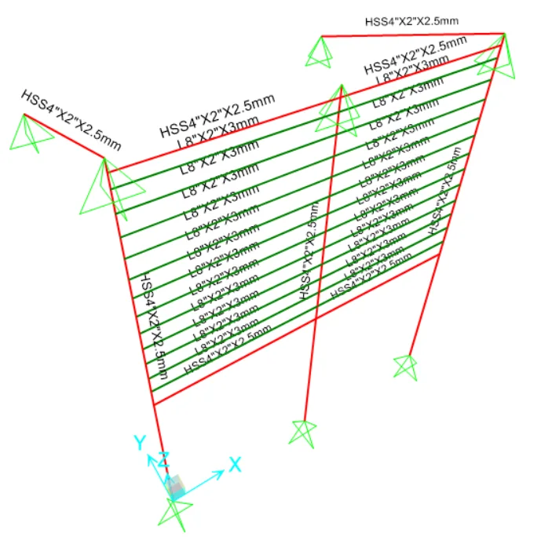
Memoria 32 · Elementos auxiliares metálicos
Soportes metálicos de balcones y celosías
Memoria técnica para soportes metálicos de balcones y celosías (Activos 471 y 470). Organiza modelamiento estructural, cargas y combinaciones, diseño de acero, conexiones y anclajes con enfoque de portafolio, conservando solo información técnica publicable.
7 capítulos · 10 imágenesPórticos de ingreso
2 memorias
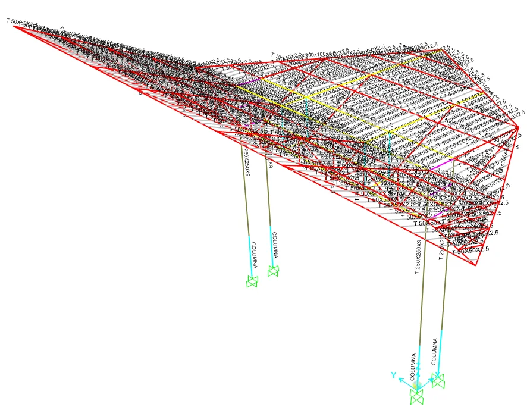
Memoria 19 · Estructuras livianas de acceso
Pórtico metálico de ingreso principal
Memoria técnica para pórtico metálico de ingreso principal (Pórtico principal). Organiza modelamiento estructural, cargas y combinaciones, análisis sísmico, diseño de acero, conexiones y anclajes con enfoque de portafolio, conservando solo información técnica publicable.
10 capítulos · 29 imágenes
Memoria 20 · Estructuras livianas de acceso
Pórtico metálico de ingreso secundario
Memoria técnica para pórtico metálico de ingreso secundario (Pórtico secundario). Organiza modelamiento estructural, cargas y combinaciones, análisis sísmico, diseño de acero, conexiones y anclajes con enfoque de portafolio, conservando solo información técnica publicable.
10 capítulos · 34 imágenesCimentaciones y reforzamientos
3 memorias

Memoria 21 · Revisión de fundaciones existentes
Verificación y reforzamiento de cimentación
Memoria técnica para verificación y reforzamiento de cimentación (Activo 472). Organiza modelamiento estructural, cargas y combinaciones, análisis sísmico, diseño de acero, conexiones y anclajes con enfoque de portafolio, conservando solo información técnica publicable.
10 capítulos · 77 imágenes
Memoria 28 · Evaluaciones especiales
Verificación de columna alabeada
Memoria técnica para verificación de columna alabeada (Activo 455). Organiza modelamiento estructural, cargas y combinaciones, análisis sísmico, diseño de acero, conexiones y anclajes con enfoque de portafolio, conservando solo información técnica publicable.
10 capítulos · 154 imágenes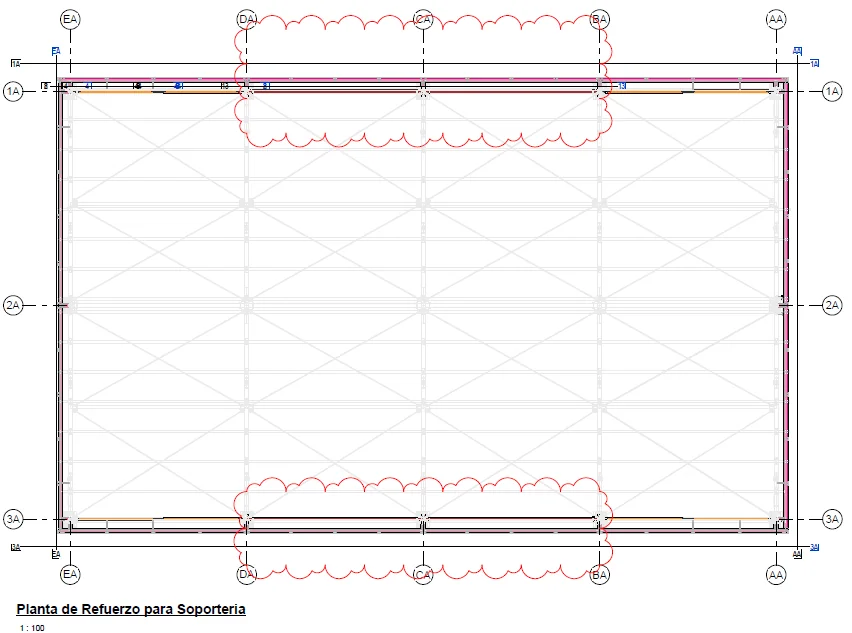
Memoria 29 · Evaluaciones especiales
Sustento técnico de solución para columna alabeada
Memoria técnica para sustento técnico de solución para columna alabeada (Activo 455). Organiza alabeo, deflexión, propuesta, anexos con enfoque de portafolio, conservando solo información técnica publicable.
2 capítulos · 2 imágenesSoportería metálica por activos
5 memorias
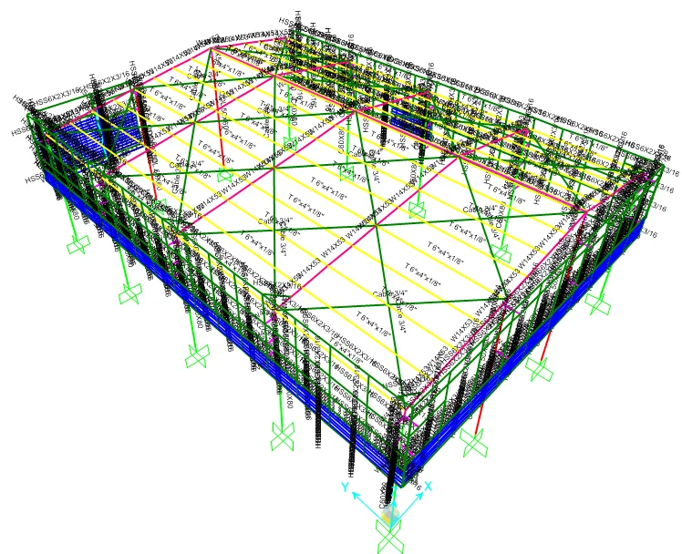
Memoria 22 · Reforzamientos y soportes de cerramiento
Soportería metálica de cerramiento
Memoria técnica para soportería metálica de cerramiento (Activo 472-01). Organiza modelamiento estructural, cargas y combinaciones, análisis sísmico, diseño de acero, conexiones y anclajes con enfoque de portafolio, conservando solo información técnica publicable.
9 capítulos · 47 imágenes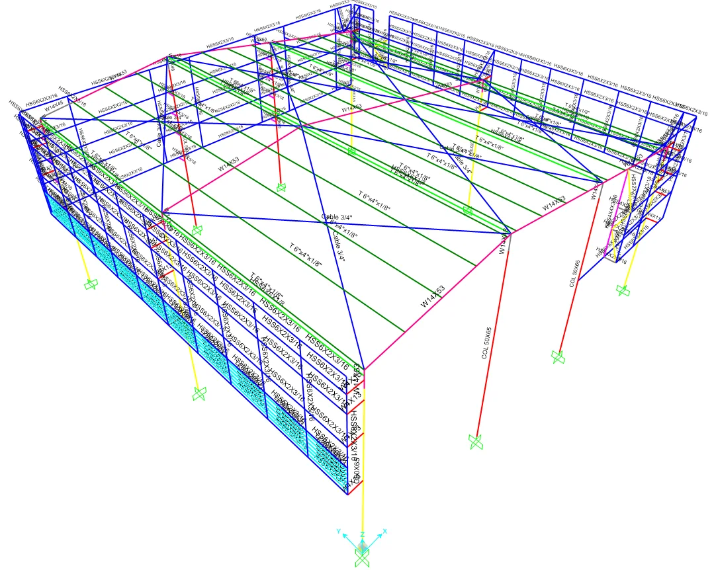
Memoria 23 · Reforzamientos y soportes de cerramiento
Soportería metálica de cerramiento
Memoria técnica para soportería metálica de cerramiento (Activo 472-02). Organiza modelamiento estructural, cargas y combinaciones, análisis sísmico, diseño de acero, conexiones y anclajes con enfoque de portafolio, conservando solo información técnica publicable.
9 capítulos · 48 imágenes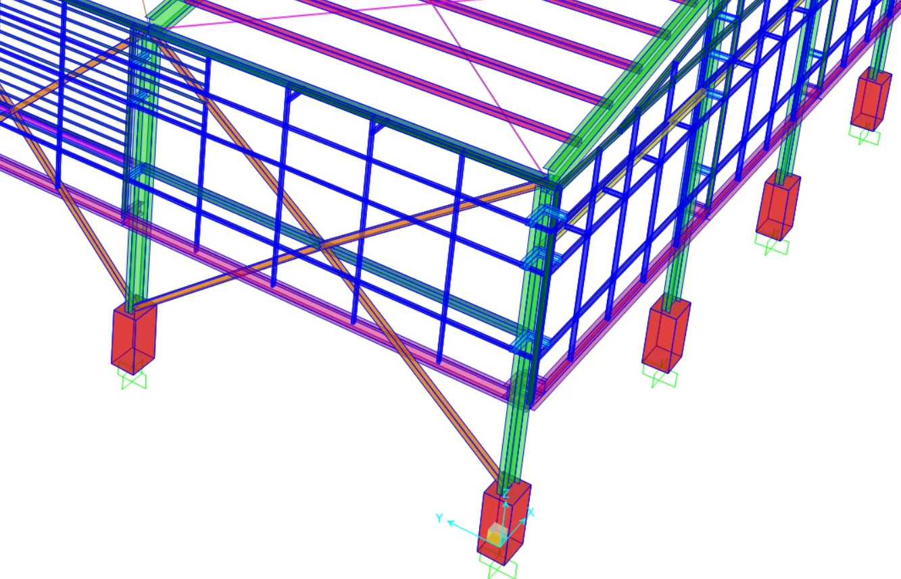
Memoria 24 · Reforzamientos y soportes de cerramiento
Reforzamiento y soportería de celosía
Memoria técnica para reforzamiento y soportería de celosía (Activo 456). Organiza modelamiento estructural, cargas y combinaciones, análisis sísmico, diseño de acero, conexiones y anclajes con enfoque de portafolio, conservando solo información técnica publicable.
10 capítulos · 44 imágenes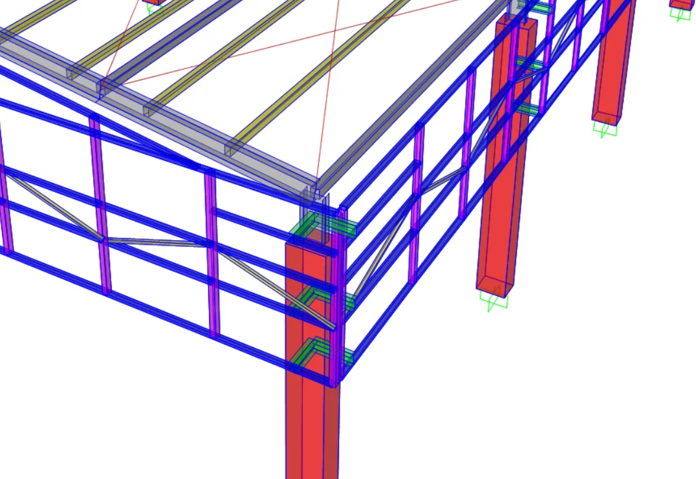
Memoria 25 · Reforzamientos y soportes de cerramiento
Reforzamiento y soportería de celosía
Memoria técnica para reforzamiento y soportería de celosía (Activo 469). Organiza modelamiento estructural, cargas y combinaciones, análisis sísmico, diseño de acero, conexiones y anclajes con enfoque de portafolio, conservando solo información técnica publicable.
10 capítulos · 45 imágenes
Memoria 27 · Reforzamientos y soportes de cerramiento
Reforzamiento y soportería de celosía
Memoria técnica para reforzamiento y soportería de celosía (Activo 455). Organiza modelamiento estructural, cargas y combinaciones, análisis sísmico, diseño de acero, conexiones y anclajes con enfoque de portafolio, conservando solo información técnica publicable.
10 capítulos · 42 imágenesEscaleras y accesos técnicos
2 memorias
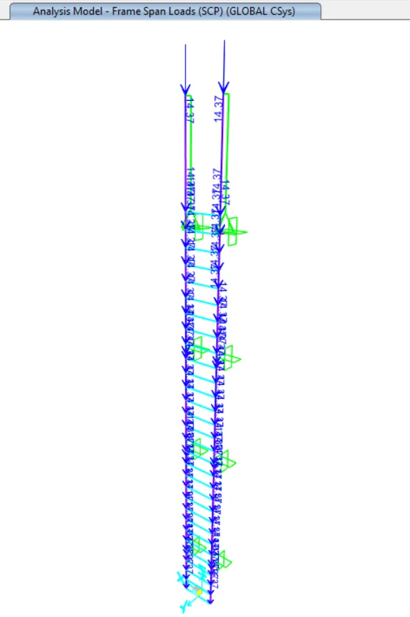
Memoria 30 · Elementos de acceso y mantenimiento
Escalera de gato para tanque elevado
Memoria técnica para escalera de gato para tanque elevado (Tanque elevado). Organiza modelamiento estructural, cargas y combinaciones, diseño de acero, conexiones y anclajes con enfoque de portafolio, conservando solo información técnica publicable.
8 capítulos · 42 imágenes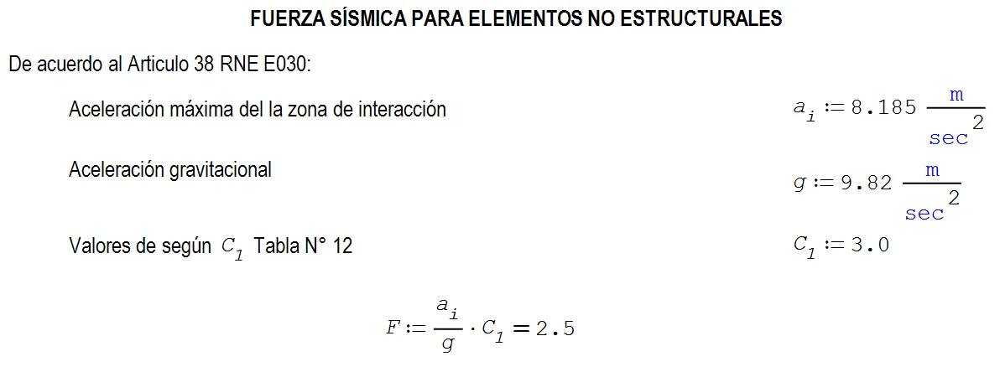
Memoria 31 · Elementos de acceso y mantenimiento
Escalera de gato para tanque
Memoria técnica para escalera de gato para tanque (Tanque industrial). Organiza modelamiento estructural, cargas y combinaciones, diseño de acero, conexiones y anclajes con enfoque de portafolio, conservando solo información técnica publicable.
8 capítulos · 39 imágenesMemoria integral de edificación educativa
1 memoria
Concreto armado y cimentaciones
4 memorias
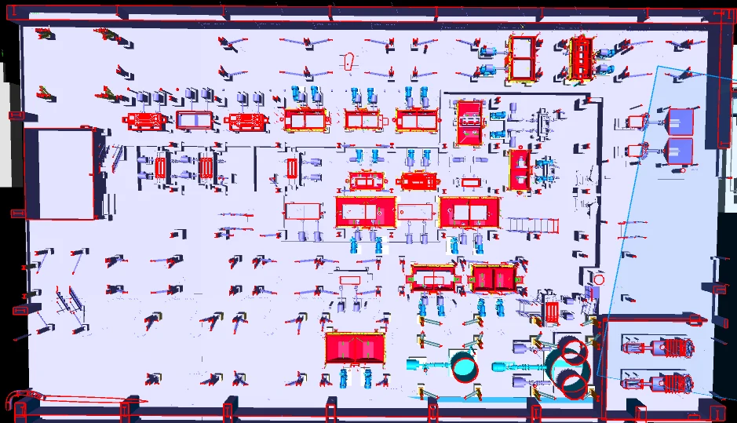
Memoria 01 · Cimentaciones industriales
Cimentaciones para plataforma de celdas, bombas y cajones
Diseño de cimentaciones para plataformas de proceso, bombas y cajones de pulpa, con énfasis en presiones de contacto y estabilidad global.
48 imágenes técnicas
Memoria 03 · Plataformas y accesos
Espesamiento y filtrado: plataforma y torre de escalera
Verificación estructural de plataforma de filtrado y torre de escalera, integrando criterios de resistencia y servicio.
59 imágenes técnicas
Memoria 04 · Tanques y bombas
Cimentaciones de tanques y bombas
Diseño de fundaciones para tanques y bombas con cargas de líquido, operación, sismo y transferencia a pedestales.
45 imágenes técnicas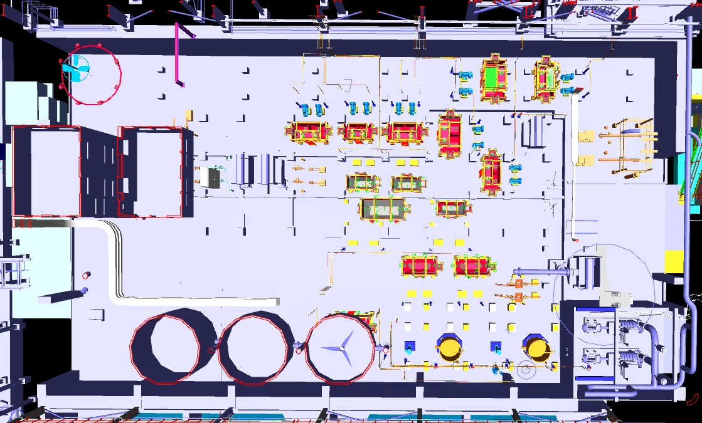
Memoria 07 · Cimentaciones de proceso
Cimentación de cajones, plataformas y bombas
Memoria de concreto armado para fundaciones de cajones, plataformas y bombas vinculadas a equipos de proceso.
69 imágenes técnicasSoportes de equipos industriales
2 memorias

Memoria 02 · Soporte de equipos
Estructura soporte de filtro
Análisis de estructura soporte asociada a filtrado, con cargas de operación, servicio, viento, sismo y factores de utilización.
62 imágenes técnicas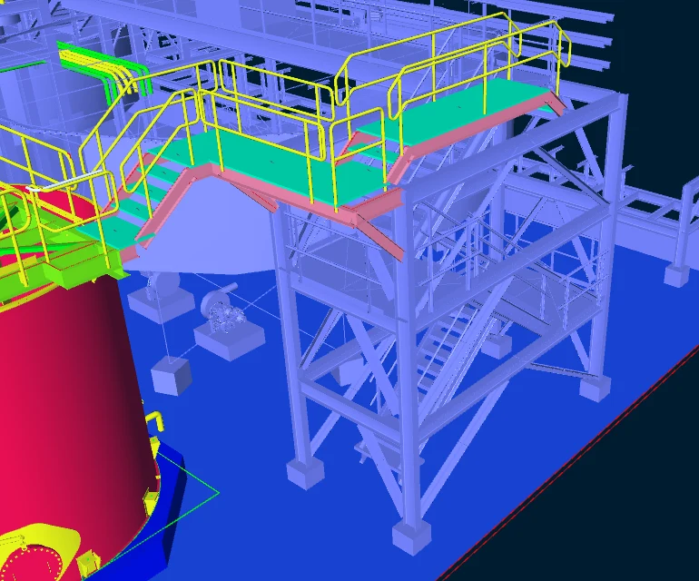
Memoria 09 · Soporte de equipos
Estructura soporte para equipo distribuidor
Verificación de soporte metálico para equipo distribuidor, con cargas térmicas, operación y demanda sísmica.
34 imágenes técnicasEdificios industriales e institucionales
3 memorias
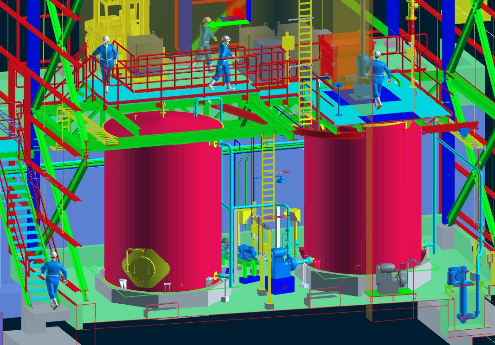
Memoria 05 · Edificio industrial
Fundaciones para edificio de preparación y dosificación
Modelación y diseño de fundaciones para edificio industrial de reactivos, con revisión de estabilidad, servicio y resistencia.
107 imágenes técnicas
Memoria 11 · Edificio industrial
Edificio industrial de reactivos
Análisis estructural de edificio industrial, plataformas y muros asociados a preparación y dosificación de reactivos.
75 imágenes técnicas
Memoria 15 · Edificación institucional
Edificación institucional por módulos
Memoria integral de estructuras para edificación por módulos, con modelación sísmica, diseño de elementos y cimentaciones.
1837 imágenes técnicasAcero estructural y plataformas
4 memorias

Memoria 06 · Acero estructural
Soporte metálico de tanque y plataformas de proceso
Diseño de soporte metálico de tanque, plataformas de proceso y accesos, con control de derivas y esfuerzos.
94 imágenes técnicas
Memoria 08 · Plataformas metálicas
Plataformas metálicas de celdas y pasarelas
Diseño y verificación de plataformas, pasarelas de mantenimiento y accesos para operación industrial.
112 imágenes técnicas
Memoria 10 · Plataformas metálicas
Plataformas de filtros
Diseño de plataformas metálicas de filtrado, con control de gravedad, sismo, servicio y resistencia.
38 imágenes técnicas
Memoria 17 · Plataformas metálicas
Plataforma de filtros: análisis de supuestos
Verificación estructural de plataforma de filtrado, evaluando interferencias de montaje, demanda/capacidad y reforzamiento de columnas metálicas.
10 imágenes técnicasUpgrade y rehabilitación industrial
3 memorias

Memoria 12 · Acero estructural
Upgrade industrial: acero estructural
Memoria de acero estructural para ampliación industrial, integrando soportes, pasarelas y control de deformaciones.
40 imágenes técnicas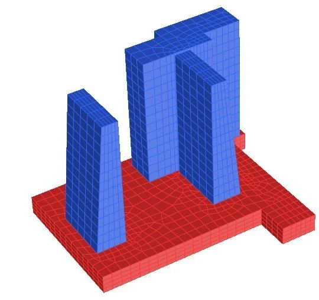
Memoria 13 · Concreto armado
Upgrade industrial: concreto armado
Diseño de cimentaciones y pedestales de concreto armado para equipos de ampliación industrial.
39 imágenes técnicas
Memoria 14 · Concreto armado
Upgrade industrial: concreto y lista de verificación
Versión de control técnico para fundaciones de concreto, con verificaciones de estabilidad, resistencia y servicio.
36 imágenes técnicas